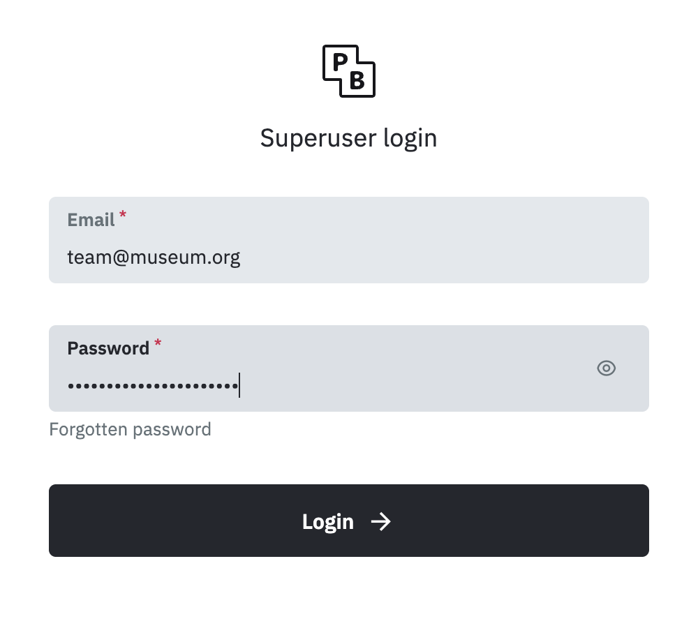
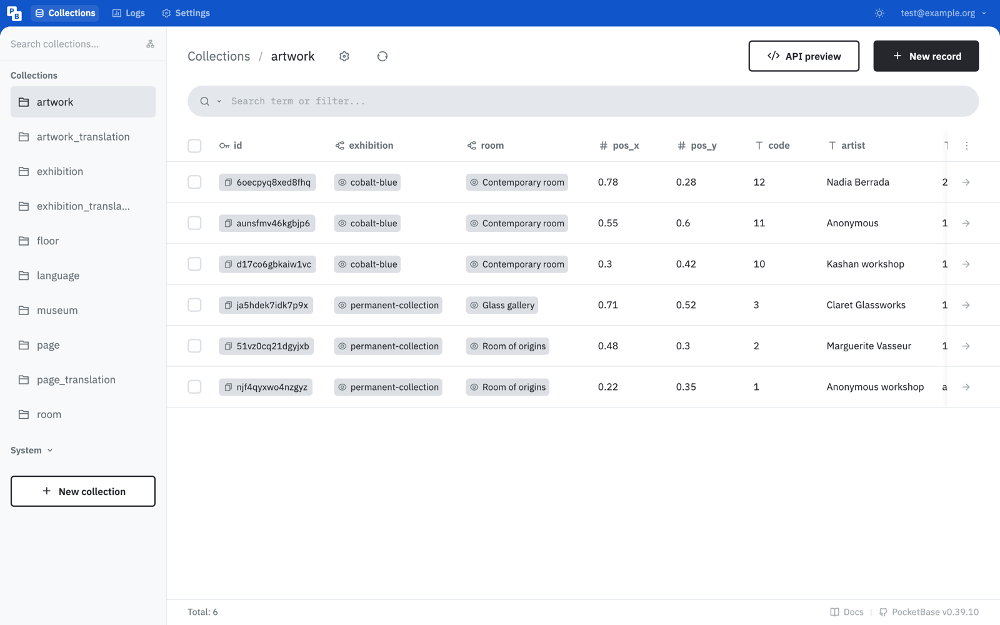
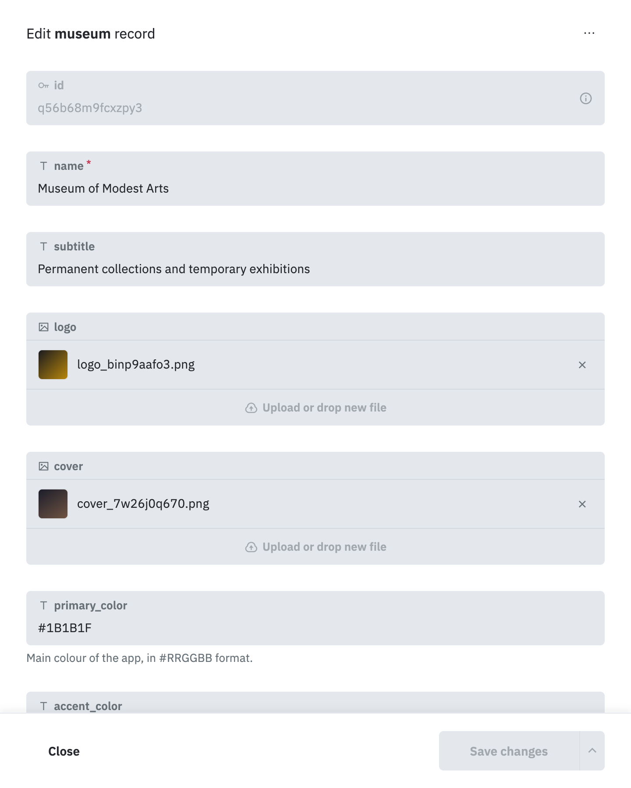
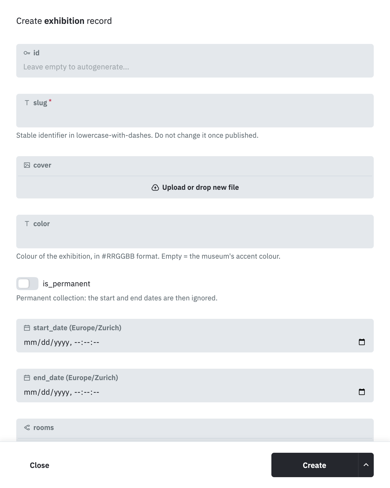
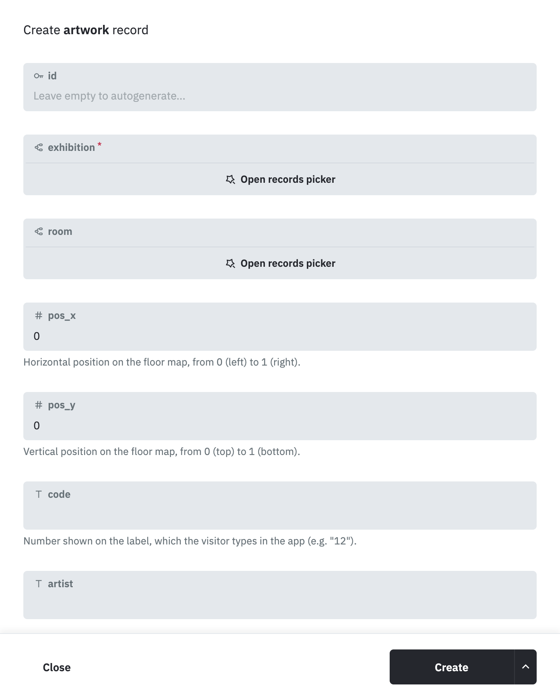
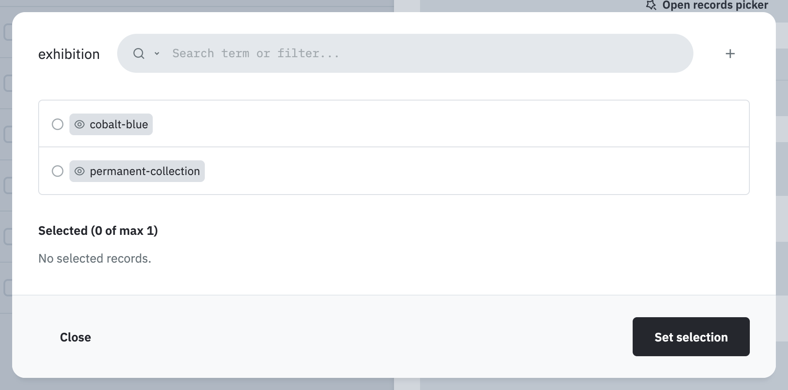
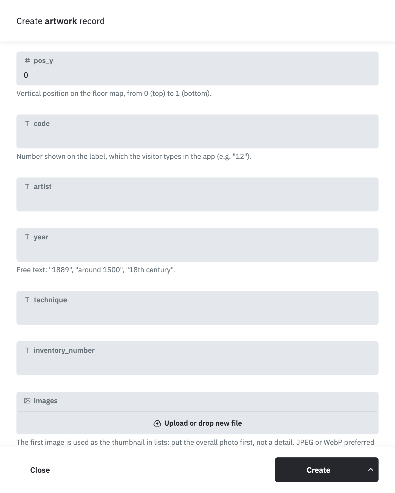
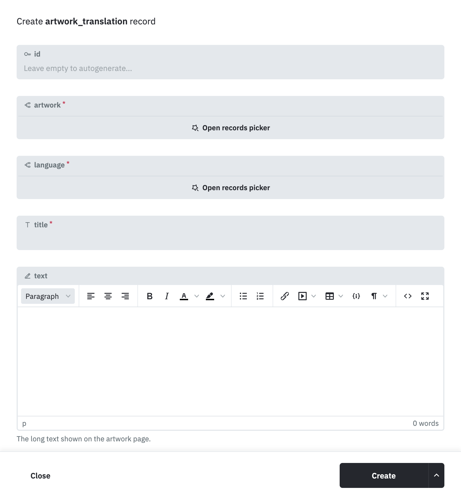
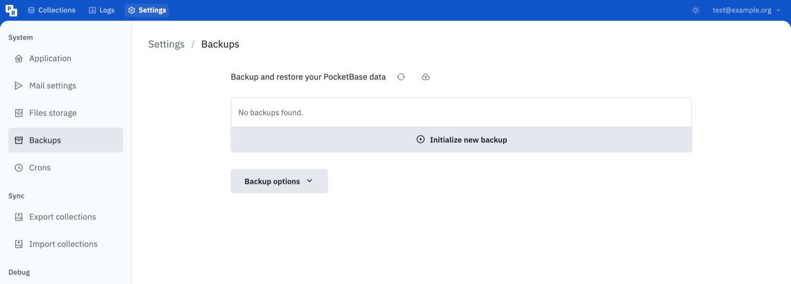

Getting started
A guide for the museum team. No technical knowledge needed — if you can fill in a paper form, you can do everything on this page.
The mobile app your visitors use is an empty shell. It carries no text, no photo and no audio guide of its own. Everything — even the name of the museum, its logo and its colours — comes from one website that belongs to you: the dashboard.
What you save in the dashboard reaches the visitors' phones within a minute. Nobody has to update anything, and you never have to go through Apple or Google again.
1. The five words to know
The dashboard uses a handful of words over and over. Here is what each one means, in plain language.
| The word | What it really means |
|---|---|
| Dashboard | The website where you work. Its address ends in /_/. |
| Collection | A drawer holding one kind of thing. There is a drawer for artworks, one for exhibitions, one for rooms, and so on. They are listed down the left-hand side. |
| Record | One card inside a drawer: one artwork, one exhibition, one room. |
| Field | One box to fill in on a card: the artist, the year, the photo. |
| Published | A small switch on a card. Off, visitors see nothing. On, they see it. This is your safety net. |
2. Signing in
Whoever installed the server for you gave you three things: an address
ending in /_/, an email address and a password.
Open the address in your usual web browser and you will see this:

Type your email and your password, then click Login.
Add the address to your browser's bookmarks (or favourites) the very first time. You will be opening it several times a week, and it is much easier than typing it again.
3. A tour of the dashboard
Everything you need is on one screen. The list on the left is the set of drawers. Click a name, and the middle of the screen shows what is inside it.

artwork drawer, open. Six artworks, one per row.Three things to spot on this screen, and you know your way around:
- the list on the left — your drawers;
- the black + New record button, top right — this is how you add anything, anywhere;
- the rows in the middle — click any row to open that card and change it.
Here is what lives in each drawer. You will only ever use the first ten; the ones grouped under "System" are not yours to touch.
| Drawer | What goes in it |
|---|---|
museum | The name, subtitle, logo, colours and address of the museum. One single card, which you edit but never delete. |
language | The languages your app is offered in. |
floor | The floors of the building, each with its map image. |
room | The rooms, each attached to a floor. |
exhibition | The permanent collection and the temporary exhibitions. |
exhibition_translation | The title and introduction of an exhibition, in one language. |
artwork | The artworks: label information, photos, position on the map. |
artwork_translation | The title, the text and the audio guide of an artwork, in one language. |
page | Information pages: opening hours, prices, accessibility. |
page_translation | The content of an information page, in one language. |
4. How the content is organised
Everything the visitor reads sits on three levels, one inside the other:
Two consequences, and they explain nine problems out of ten:
- An artwork holds no text of its own. The title and the description live in the translation. An artwork with no translation shows up empty.
- One translation per language. An artwork presented in English and in French needs two translation cards. That is on purpose: the English audio guide is a different sound file from the French one, it cannot be shared.
5. Setting up a museum, from empty to open
If your dashboard is brand new, follow these seven stages in this order. The order matters: an artwork has to be attached to an exhibition, so the exhibition must exist first. Working backwards means going over the same cards twice.
Do not try to do it all in one afternoon. Each stage can be left half-finished and picked up next week — as long as nothing is published, nobody sees the work in progress.
-
The languages
Drawer
language. One card per language you intend to publish in: the code (en,fr,de,es…) and the label, which is the name of the language written in that language:English,Français,Deutsch.Leave the
activeswitch off until the essentials are actually translated. A language that exists but has no texts behind it shows visitors nothing but empty pages. -
The museum itself
Drawer
museum. There is already one card there — click the row to open it. This is where the app gets its identity: the name, the subtitle, the logo, the home image, the two colours, the default language, the address and the map coordinates.
The museum card. Fill it in, then click Save changes. The colours are written in the
#RRGGBBform —#2A4B9Bfor a cobalt blue. If you do not have your museum's colour codes to hand, whoever made your signage or your website will. -
The floors, then the rooms
Drawer
floor: one card per level, with its map image and its level number —0for the ground floor,1for the first floor,-1for a basement.Then drawer
room: one card per room, each attached to its floor, with the short code shown in the app (R1,S3…). -
The exhibitions
Drawer
exhibition, then + New record.
A new exhibition. The grey line under each box explains what it is for. - slug — a short name in lowercase-with-dashes,
like
cobalt-blue. It is how the exhibition is recognised; never change it once the exhibition is published. - cover — the cover image, 5 MB max.
- color — optional. Give a temporary exhibition the colour of its poster and the app tints its screens to match. Leave it empty to keep the museum's own colour.
- is_permanent — on for the permanent collection; the dates are then ignored. Off for a temporary exhibition, and you fill in the dates.
- rooms — the rooms it occupies.
Then, in
exhibition_translation, one card per language with the title, the subtitle and the introduction. - slug — a short name in lowercase-with-dashes,
like
-
The artworks
This is the long stage — the one you will come back to for years. It has its own walkthrough just below: Adding one artwork, step by step.
-
The information pages
Drawer
page: opening hours, prices, accessibility, legal notices. Each page needs a slug and, inpage_translation, one card per language.Each page can carry a small icon. Its name comes from Apple's icon list (
info.circle,clock,figure.roll). If in doubt, leave it empty or ask whoever installed the server. -
Open the doors
Go back over the exhibitions and the artworks and turn on their published switch. Then switch on the languages in
language.Open the app on a phone: everything should be there within a minute.
6. Adding one artwork, step by step
This is the task you will do most often. It always takes two cards: the artwork itself, then its text in each language.
Part one — the artwork
-
Open the drawer and start a card
Click
artworkon the left, then the black + New record button at the top right. A panel slides in from the right: this is your blank card.
The top half of a new artwork card. Leave id alone — the system fills it in for you.
-
Choose the exhibition
Click Open records picker under exhibition. A small window lists your exhibitions. Tick the right one, then click Set selection.

Picking the exhibition. The same window appears wherever one card has to point at another. This field is compulsory — the little red star says so. Do the same for room, which is optional but worth filling in.
-
The number on the label
code is the number printed on the wall label, the one the visitor types into the app to jump straight to this artwork — for example
12.Digits and capital letters only, and never the same code twice in the whole museum.
-
The label information
artist, year, technique, inventory_number: exactly what is written on the wall label.
year is free text, so "1889", "around 1500" and "18th century" are all perfectly fine.
-
The photographs
Click Upload or drop new file under images, and pick your photos — up to ten, 5 MB each.

The bottom half of the card, ending with the published switch. The first photo is the one shown in lists, so put the overall view first and the close-ups after. JPEG is best, at least 1600 pixels on the long side.
-
The position on the map (optional)
pos_x and pos_y place the artwork on the floor map. They are fractions of the map image, not metres:
- pos_x:
0at the left edge,0.5in the middle,1at the right edge; - pos_y:
0at the top,0.5in the middle,1at the bottom.
Open the map image, find the spot by eye, and estimate. An artwork in the centre of the map is at
0.5and0.5. Two decimals are plenty — nobody will notice the difference between0.25and0.26. - pos_x:
-
Publish, and create
Turn on the published switch at the bottom, then click the black Create button.
Not ready to show it yet? Leave the switch off. The card is saved all the same and stays invisible to visitors until you come back and switch it on.
Part two — the text and the audio guide
The artwork now exists, but it is still mute. Open the drawer
artwork_translation and click + New record.

- artwork — the artwork you have just created, through Open records picker.
- language — the language this text is written in.
- title — the title of the work in that language. Compulsory.
- text — the long description. The little toolbar gives you bold, italic, paragraphs and lists, like in a word processor.
- audio — the audio guide file for this language, up to 25 MB. Prefer MP3: at the same quality it is five to ten times lighter than a WAV, which matters a great deal to a visitor listening over mobile data.
- audio_duration — the length in seconds, shown before playing. Optional.
Click Create. Then start again for the next language.
Enter your artworks in batches: ten artwork cards first, then their ten English texts, then their ten French texts. Doing the same gesture ten times in a row is far quicker, and far less error-prone, than juggling three drawers for every single work.
7. Four rules that keep you safe
Deleting an exhibition deletes every artwork inside it, along with their texts and their audio guides. It happens instantly and it cannot be undone.
To take something out of the app without losing anything, turn off its published switch. It disappears from the app and stays whole in the dashboard. Use this. Deleting is almost never what you actually want.
Nothing is visible until published is on. That is what lets
you prepare a whole exhibition for months, in full, without a single visitor seeing it.
Never change a slug once it is published. It is the permanent
name of an exhibition or a page. Changing the title displayed to visitors is fine and
encouraged; changing the slug breaks the link.
An artwork with no translation shows nothing. If you only have time for one thing, create the translation in your main language — the photo and the label alone are an empty page.
8. "The app doesn't show my change"
Check these four, in this order. It is almost always one of them.
-
The published switch is off
On the artwork or on its exhibition. A published artwork inside an unpublished exhibition stays invisible — the exhibition hides everything it contains.
-
The translation is missing
The phone is set to a language you have not translated this artwork into. Check the
artwork_translationdrawer. -
The language is switched off
The language exists in the
languagedrawer, but itsactiveswitch is off. -
The app is a minute behind
Close the app completely — not just back to the home screen — and open it again.
If none of that explains it, contact whoever installed the server for you, and tell them the name of the artwork and the language concerned. Those two details save a great deal of back and forth.
9. Backups
A museum's content represents weeks of typing. That, far more than any server failure, is the real risk.

Automatic backups are normally set up for you when the server is installed. Ask whoever did it to confirm two things: that backups run automatically, and that they are stored somewhere other than the server itself.
Before a big operation — a mass import, a clean-up, anything that makes you slightly nervous — you can also click Initialize new backup to take one yourself, there and then.
10. Useful links
- The content guide Every field, one by one, with its accepted formats and its limits. The reference to keep open beside you when a box puzzles you.
- The technical README Installing, deploying and maintaining the server. For whoever looks after your machine — you should not need it.
- PocketBase documentation The software the dashboard is built on. Useful to your provider, rarely to you.
- The project on GitHub The source code, and where to report a problem.